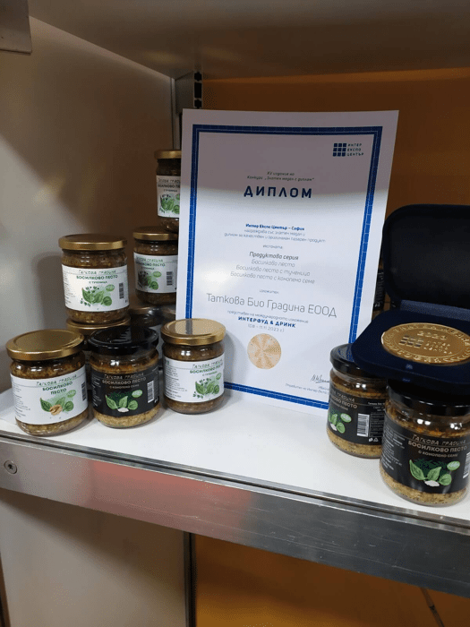
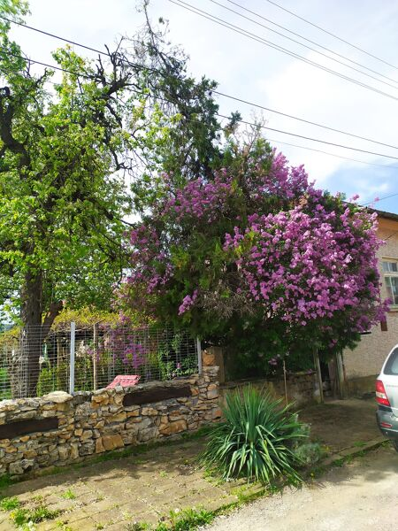
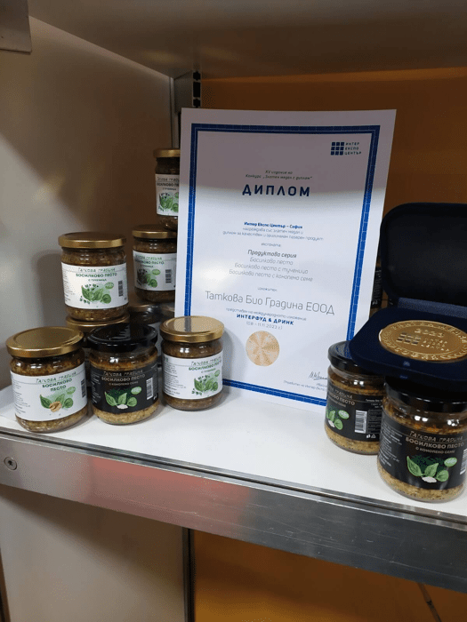
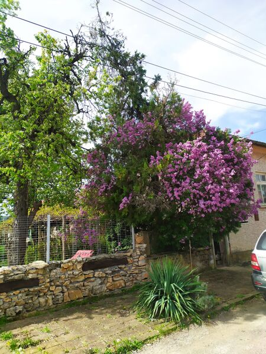
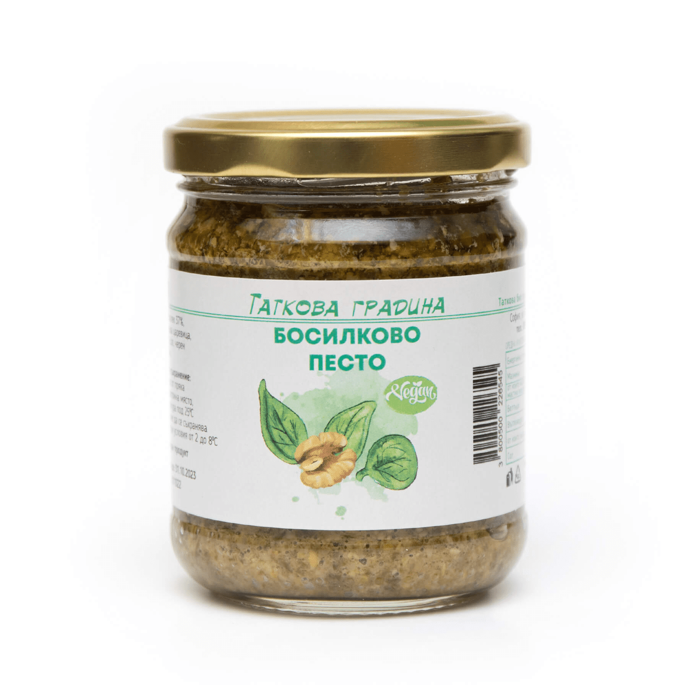
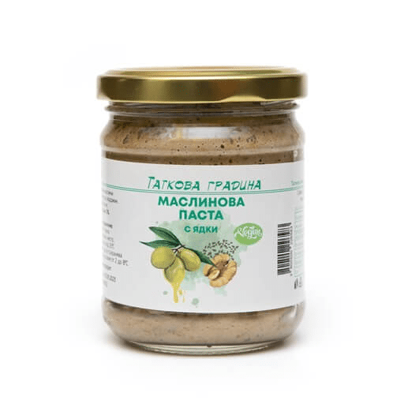
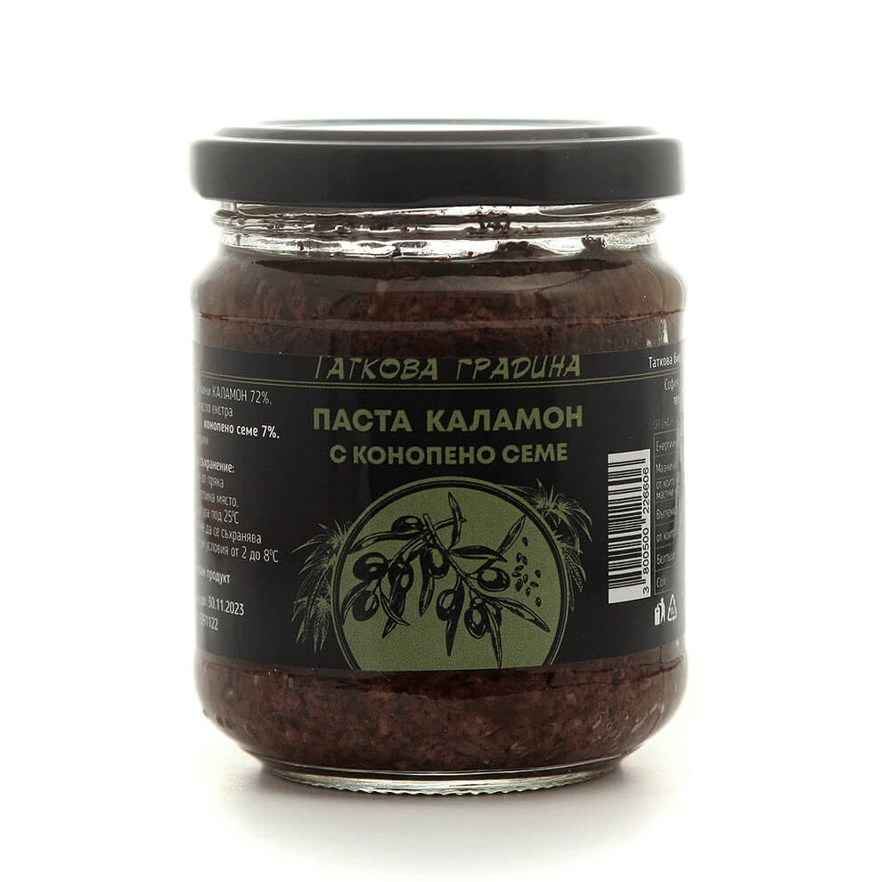

EN

Биологичното отглеждане на плодове и зеленчуци за нас е мислене, убеждение и отношение към заобикалящият ни свят. Затова около "летният офис" е цветно, ароматно и звучно, а на масата и за всички гости, които посрещаме има жълти, зелени и розови домати, яйца с бяла, зелена и червена черупка, ароматен чай от мента, маточина и салвия. Прекрасно е да откъснеш с ръката си свежи билки и подправки, вкусни краставици и домати, малини, грозде, годжи бери, кавкаска райска ябълка, хинап или да хванеш кошницата и да събереш яйцата от полозите.
Благодарни сме на съдбата, че макар и по трудният начин ни върна към корените ни и ни накра да осъзнаем, че имаме богатство от знание, можене, мислене, които да дадем.
Изградихме бизнеса си, чрез убединяване на професионалните знания на биолог и специалист по маркетинг, сладки и солени продукти с постоянно и високо качество, които са достъпни за всички по всяко време и всяко място.
Храната е живот, а здравето започва с чистата храна.
Добре дошли в света на Таткова градина и заповядайте отново!
Нашите Продукти


 



Таткова Градина
Храната е живот, а здравето започва с чистата храна.
За нас
Ние сме "Таткова градина" или Марин и Пепа Петрови, малък семеен бизнес с ферма в централна България и производствен цех в София.Биологичното отглеждане на плодове и зеленчуци за нас е мислене, убеждение и отношение към заобикалящият ни свят. Затова около "летният офис" е цветно, ароматно и звучно, а на масата и за всички гости, които посрещаме има жълти, зелени и розови домати, яйца с бяла, зелена и червена черупка, ароматен чай от мента, маточина и салвия. Прекрасно е да откъснеш с ръката си свежи билки и подправки, вкусни краставици и домати, малини, грозде, годжи бери, кавкаска райска ябълка, хинап или да хванеш кошницата и да събереш яйцата от полозите.
Благодарни сме на съдбата, че макар и по трудният начин ни върна към корените ни и ни накра да осъзнаем, че имаме богатство от знание, можене, мислене, които да дадем.
Изградихме бизнеса си, чрез убединяване на професионалните знания на биолог и специалист по маркетинг, сладки и солени продукти с постоянно и високо качество, които са достъпни за всички по всяко време и всяко място.
Храната е живот, а здравето започва с чистата храна.
Добре дошли в света на Таткова градина и заповядайте отново!
Нашите Продукти
Босилково Песто
Описание: Продукт с богат аромат и вкус. Босилекът е поднесен с допълващи аромати на зехтин, орехи и чесън. Подходящ за директна консумация или към сосове за паста, пица, салати. Класическа, но много различна собствена рецепта с местен произход на съставките. Стерилизиран продукт. Без консерванти.

Босилково песто с конопено семе
Описание: Продукт с богат аромат и вкус. Босилекът е поднесен с допълващи аромати на зехтин и чесън. Конопеното семе допълва нуждите на организма от протеини и наситени мастни киселини. Подходящ за директна консумация продукт или добавен към сосове за паста, пица, салати. Стерилизиран продукт. Без консерванти.Босилково песто с тученица
Описание: Продукт , съчетаващ ползите от две билки - босилек и тученица, поднесен в съвременна форма и подходящ за всяка трапеза. Тученицата допълва в нашия организъм цялата гама "B" витамини, Омега 3 масни киселини и витамин С . Съдържа още зехтин, орехи и чесън. Подходящ за директна консумация, за паста, пица и салати. Собствена рецепта с местен произход на съставките. Стерилизиран продукт. Не съдържа консерванти.
Горчица Класик
Описание: Продукт, подходящ за дресинги, като добавка към месо, салати, сандвичи. Съдържа важни за организма естествени антисептици - синап, хрян, пчелен мед. Класическият жълт цвят за горчица се дължи на добавена куркума, която допълва качествата на продукта с антиоксидантните си свойства. Стерилизиран продукт. Съхранявайте на защитено от светлина място.Маслинова паста с ядки
Описание: Маслиновата паста е с мек и приятен аромат на зелени маслини, с плътна структура, постигната от комплекса сурови ядки - орех и слънчоглед . Добавеният сусамов тахан допълва богатството на вкуса. Подходящ за директна консумация. Стерилизиран продукт. Не съдържа консерванти.


Паста каламон с конопено семе
Описание: Маслина КАЛАМОН с фин и балансиран вкус, с деликатен аромат на риган и розмарин. Добавеното конопено семе допълва богатството и мекотата на вкуса. Допълва ежедневната нужда на организма с протеини и наситени мастни киселини. Подходящ за директна консумация. Стерилизиран продукт. Не съдържа консерванти.Хумус
Описание: Хранителен и много вкусен Хумусът е добре позната храна и класически вкус. Нашата рецепта е нахут със сусамов тахан, кимион, чесън и фин аромат на риган. Стерилизиран продукт. Не съдържа консерванти.